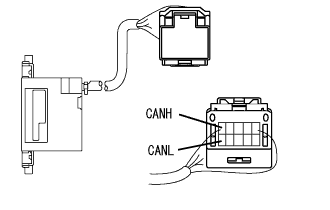

Control system CAN communication system CAN bus main line disconnection inspection (DLC3 branch line/main line/terminal resistance) |
| Symptoms | Suspicated part |
|---|---|
| The resistance between 6 (Canh) 14 (Canl) of DLC3 is 67Ω or more |
|
| Step 1 | DLC3 inspection (canh-canl) |
 |
Turn off the IG switch and measure the resistance between 6 (CANH) ← → 14 (CANL) of DLC3.
| A | 108-132Ω |
| B | 132Ω or higher |
 ) Do trouble shooting again.
) Do trouble shooting again.
|
| ||||
| A | |
| Step 2 | Diag code reading |
Read the output diag code.
| A | U0121/94 (ABS), U0123/62 (VSC), U0124/95 (ABS), and U0126/63 (VSC) are output simultaneously. |
| B | The CAN communication diag code only outputs U0126/63 (VSC) |
|
| ||||
| A | |
| Step 3 | CAN bus disconnection inspection (CAN Bus Main Line (VSC ECU-J / C)) |
Separate the brake actuator asser (VSC ECU) connector from the brake actuator Assy (VSC ECU).
Brake actuator Assy (VSC ECU) Vehicle Harness Connector The resistor between 11 (CANH) ← → 25 (CANL) is measured.
|
| ||||
| NG | |
| Step 4 | Wiring harness connector (J/C) Single Inspection (CANH-CANH) |
 |
Cut the wiring harness connector (J/C) from the vehicle harness.
Measure the resistor between 4 (CANH) ← → 5 (Canh), 4 (CANH), 4 (CANH), 4 (CANH), 4 (CANH), 4 (CANH), 4 (CANH), 4 (CANH), 4 (CANH), 4 (Canh) of the wiring harness connector (J/C).
|
| ||||
| OK | |
| Step 5 | Wiring harness connector (J/C) Single Inspection (CANL-CANL) |
Measure the resistance between 15 (CANL), 15 (CANL), 15 (CANL), 15 (CANL), 15 (CANL), 15 (CANL), 15 (CANL), 15 (CANL), 15 (CANL) of the wiring harness connector (J/C).
|
| ||||
| OK | ||
| ||
| Step 6 | CAN bus disconnection inspection (CAN bus main line (steering angle sensor-j / c)) |
|  |
Turn off the IG switch and separate the connector of the steering sensor (steering angle sensor) from the steering sensor (steering angle sensor).
Measure the resistance of 1 (CANH) ← → 6 (CANL) of the vehicle harness connector of the steering sensor (steering angle sensor).
|
| ||||
| NG | |
| Step 7 | Wiring harness connector (J/C) Single Inspection (CANH-CANH) |
|
Cut the wiring harness connector (J/C) from the vehicle harness.
Measure the resistor between 5 (CANH) ← → 4 (Canh), 5 (CANH), 5 (Canh), 5 (CANH), 5 (CANH), 5 (CANH), 5 (CANH), 5 (CANH), 5 (CANH) of the wiring harness connector (J/C).
|
| ||||
| OK | |
| Step 8 | Wiring harness connector (J/C) Single Inspection (CANL-CANL) |
Measure the resistance between 16 (CANL) ← → 15 (CANL), 16 (CANL) ← → 17 (CANL), 16 (CANL), 16 (CANL), 16 (CANL), 16 (CANL) of the wiring harness connector (J/C).
|
| ||||
| OK | ||
| ||